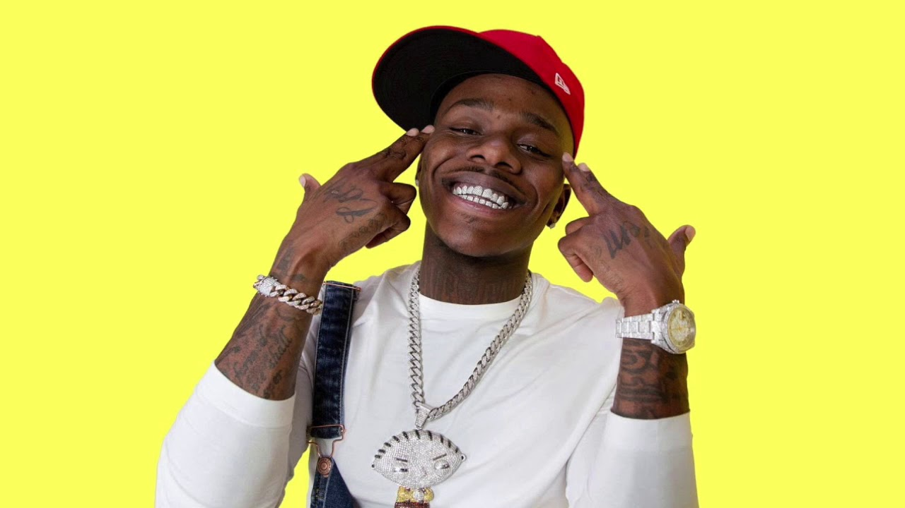

Dani Leigh, DaBaby Broke Up
- 
File this under "rappers you may never hear from again." Following the huge controversy from her song "Yellow Bone," Dani Leigh has announced that she's single. Meanwhile, DaBaby was thirsting over forgotten industry pass-around India Love. Something tells me, this will be the last headline two out of the three will ever get.